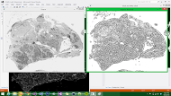
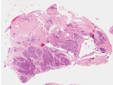
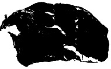
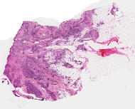
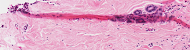
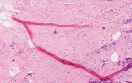

Problem Definition
Part 1: For this assignment we were given samples of satined breast cancer tissues. Our task was to implement algorithms that would help characterize
the samples. These were real images provided to us by Charles MGH, that the Vision Department is doing research with.
The historical sections of tumors are placed on slides, tagged by patient ID, and viewed with silde scanners, that are stored in a hospital for at least five years.
So if we are able to come up with an algorithm to characterize the slides it could be used to come up with a database that contains information about the slides.
Part 2: The second part was to see if we could come up with skeleton characterizations of tissue folds in the breast cancer.
Assumptions: We assumed that we could use opencv and all its morphological functions.
Method and Implementation
Part 1
Trying to Implement one of the Segmentation Algorithms found in Class
To implement segmentation we tried experimenting with adaptive thresholding, sobel edge detection, largest contours and double thresholding.
Experimenting with Methods that Didnt work so well
For our failed experimental methods we tried a mix adaptive thresholding, sobel edge detection, and largest contours. However as the pictures below show the results were pretty poor for segmentation.
 |
 |  |
Double Thresholding
For double thresholding we chose two different thresholds as a high and low. We then thresholded the image with both threshhold values. After that we iteratited through both images. We then checked if the lower thresholded image's pixel was black and the higher thresholded image's pixel was white. We then checked pixels in the proximity and based on that we reassigned that pixel to either black or white. After double thresholding we did some morphological functions to the double thresholded image. Specifically we closed the image twice. After that we then took the largest contour. With this method we experienced much success.
Before and After Double Thresholding | |||
| Original Input Image | After Double Thresholding | After getting largest Contour | |
| Image 0 |  |  |
 |
| Image 1 |  |
 |
 |
| Image 2 |  |
 |
 |
| Image 3 |  |  |
 |
Sample Code:
Mat doubleThreshold(Mat src)
{
int thresh = 215;
int thresh2 = 230;
Mat thres_output1, thres_output2;
thres_output1 = src < thresh;
thres_output2 = src < thresh2;
Mat threshoutput = Mat::zeros(Size(src.cols, src.rows), thres_output1.type());
for(int j = 0; j < thres_output1.cols; j++){
for (int i = 0; i < thres_output1.rows; i++){
uchar pixel1 = thres_output1.at(i,j);
uchar pixel2 = thres_output2.at(i,j);
if(pixel1 == 255){threshoutput.at(i,j) = 255;}
else if (pixel2 == 0){ threshoutput.at(i,j) = 0;}
else if(pixel1 == 0 && pixel2 == 255 && i < src.rows - 1 && j < src.cols - 1 && i > 0 && j > 0){
if (thres_output1.at(i-1, j) == 255 || thres_output1.at(i + 1, j) || thres_output1.at(i, j - 1) || thres_output1.at(i, j + 1))
{
threshoutput.at(i,j) = 255;
}
else{threshoutput.at(i,j) = 0;}
}
else{ threshoutput.at(i,j) = 0;}
}
}
return threshoutput;
}
Computing qualities of the breast Cancer Cell Images
Finding Area, Perimeter, Euler Number, Compactness, Orientation, Circulatiry.
For Area and Perimiter we got the information straight from the largest contour. Compactness was a ratio of area and perimeter. For Euler number we used the hierarchy information to count the number of holes in our image. For orientationand circulatiry we first got the moments given the contours and then applied the formula given in class and found in a paper referenced in the bibliography.
Part 2
Skeleton's of the Tissue Folds
For this we tried a mix of skin detection, absolute thresholding, and morphology. We eventually decided to ditch thresholding when
it was affecting results and when we started to realize that the ranges for the skin tissue could vary from image to image, so
given a completely different image we hadn't seen before it might not perform that well. However adaptive thresholding
is more extensible at a small expense of keeping a little excess pixels resulting in a slightly different skeleton.
We first converted to grayscale, then gaussian blurred, then used adaptive thresholding.
After that we used a close and 2 erodes to clean up the image.
After that we found the larges contour. After getting the binary image created with the largest contour we closed and
eroded again in order to clean up the image further. Finally we used a type of p tiling by finding the contours of the image
and only keeping ones with an area .025% of the entire image size.
double area = contourArea(contours2[i]);
if (area > .025*((double)(img3.rows * img3.cols))) {
drawContours(cont2, contours2, i, Scalar(255, 255, 255), CV_FILLED, 8, hierarchy2);
drawContours(cont2, contours2, i, Scalar(255,255,255), 2, 8, hierarchy2);
}
After that we found a skeleton code online at: http://felix.abecassis.me/2011/09/opencv-morphological-skeleton/.
This used a series morphologies and bitwise or's to get the skeleton. After walking through the code and understanding what it was doing, we decided to use
his function to create the skeleton.
Below are some screenshots of the process described up above.
Below are some screenshots of the process described up above | ||
 |
||
 |
||
 |
||
 |
||
Question 4,5,6 Method Implementation and Discussion
For question 4 we decided to create a function that calculates "similarity" between an image and all your images that would be in a database.
(In our implmentation we used an array instead of a database, but in to do this in real life we could just use a hashtable.)
Here similarity is determined by the difference of compactness, orientation, circularity and euler number. The image in your database that produces
the smallest distance with the lost image is then chosen to be the match in your database. In our tests this worked really well. We think this is a good method since only the
id is lost but the sample preserved. A sample should have the same compactness, euler number, and orientation if nothing has happened to the
actual sample itself.
For Question 5 we decided to use template matching. We simulated a broken slide by cropping one of the images. We did template matching using normalized correlation
against all images in our "database."(again here we just used an array to store images in real life would use a better data structure).
We then kept track of which image had the normalized correlation and said that was the corresponding image in our database. In our trial runs it worked accurately.
One downside to this in practice is that it would be very slow.
For question 6: Our method should work for aged image since compactness, orientation, and circularity should not change very much.
One consideration would be to adjust double threshold parameters.
Here is a screenshot of template matching for question 5:

Experiments
Our experiments invovled testing the algorithms by trial and error. We had a lot of imshow's to see what our code was doing. For area and perimeter we actually used an opencv function to double check our code. A lot of the other evaluation's involved comaparison by hand.Results
Below are uploaded the images as results for both part I and part 2. Overall we are happy with these results.
Results for segmentations | ||
| Original Input Image | Results for Part I | |
| Image 0 | |
|
| Image 1 | |
|
| Image 2 | |
|
| Image 3 | |
|
Results for Skeletons | ||
| Original Input Image | Results for Part II | |
| Image 0 |  | |
| Image 1 |  |  |
| Image 2 |  |
 |
| Image 3 |  |
 |
Discussion
Overall we think our algorithms worked well. One big thing to change would be to implement a datastructure for questions 4 and 5 instead of using arrays. There were no efficiency issue this time in contrast to the previous assignment. Implementing p-tile and double thresholding was definetely the most important part of our algorithm. The experiments pretty much were pretty much what we expected, however skeleton code could be improved.
Conclusions
Overall I'm happy with our results. We thought it was cool to have implemented a different variation of p-tiling and to implement double threshold directly. It was nice to see what we learned to be used in a real life application. Given more time we would have liked to improved our segmentation alogrithm and our lost tag and broken sample algorithms.
Credits and Bibliography
Joint work was done with Sweekriti Satpathy and Daniel Monahan.
http://docs.opencv.org/doc/tutorials/imgproc/histograms/template_matching/template_matching.html
http://cfile7.uf.tistory.com/attach/210E193853E08FC026EDA4
http://docs.opencv.org/doc/tutorials/imgproc/imgtrans/sobel_derivatives/sobel_derivatives.html
http://codingexodus.blogspot.it/2013/01/find-holes-in-binary-image.html
http://felix.abecassis.me/2011/09/opencv-morphological-skeleton/